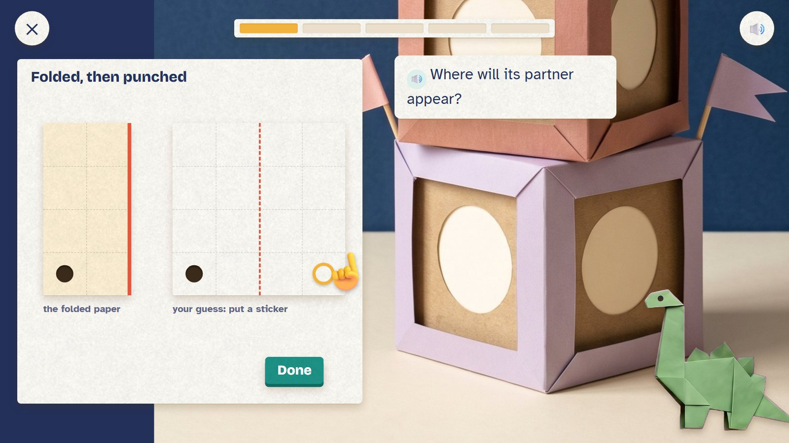
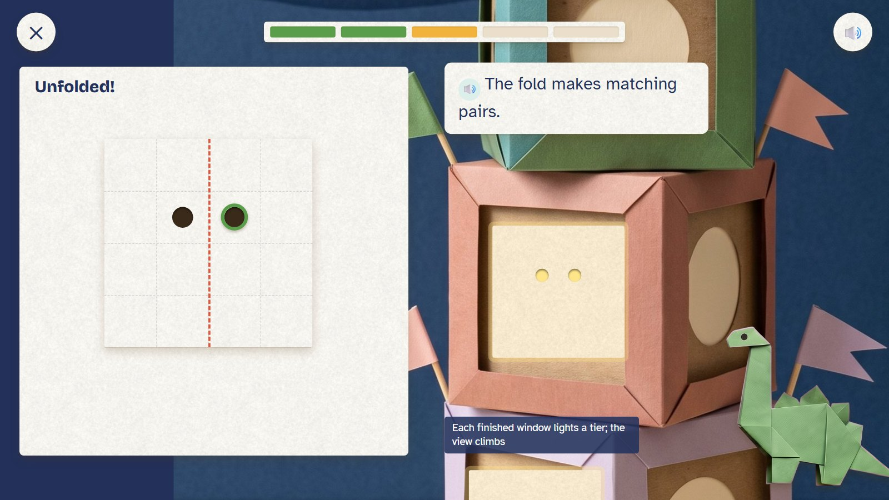
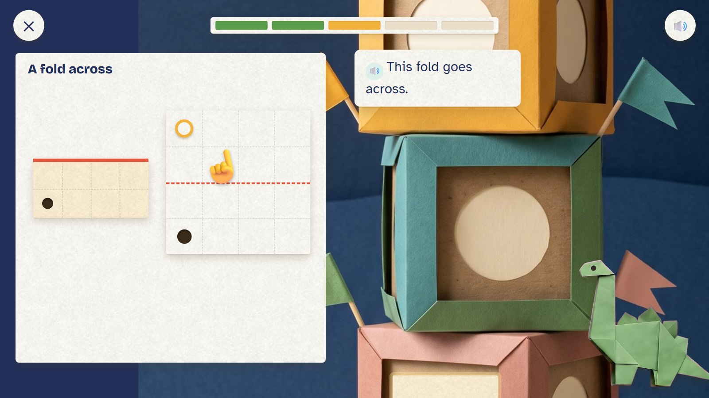
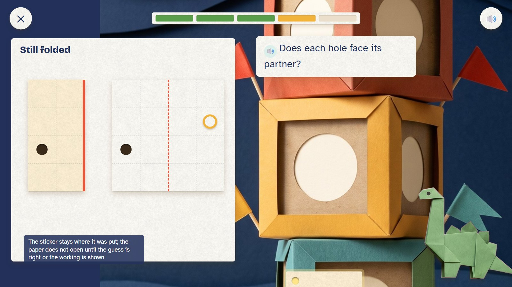
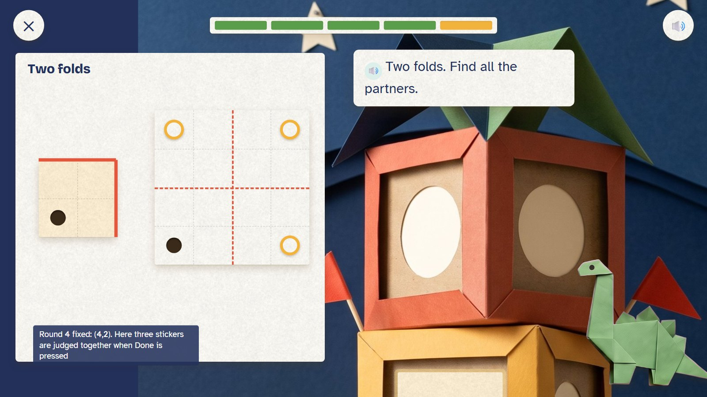
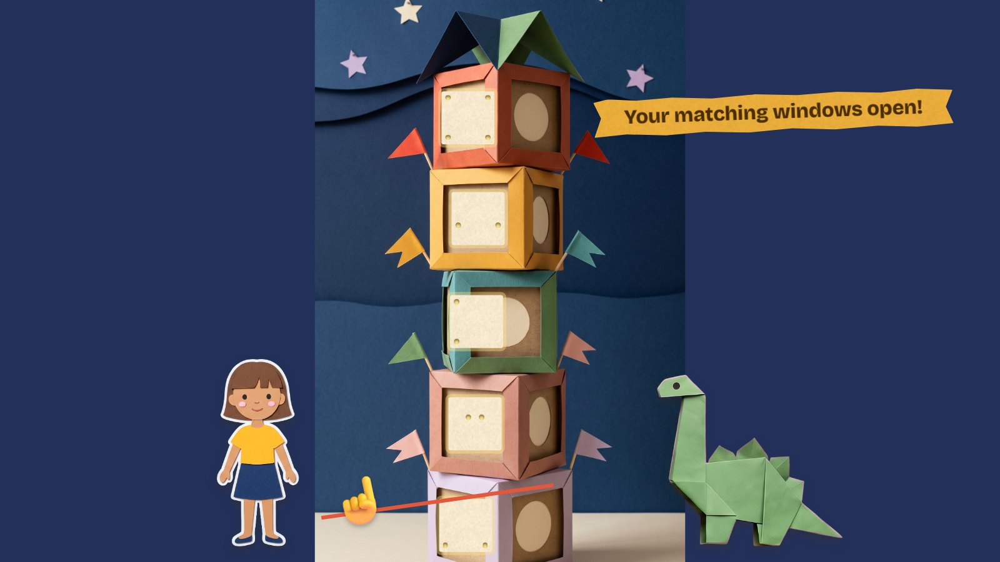

Zedu is building a tower of paper lanterns, and each lantern needs a window. The paper is folded and one hole is punched. Before it opens, the child puts stickers where the matching holes will appear. Then it unfolds: a mirror pattern. One fold makes pairs; two folds make fours.
Grades 2–3 · ages 7–9 A new engine: fold and punch (the reflection maths of E24) paper move: fold, punch, predict, unfold
Skill: Predict a reflection across one fold line, then two. Host: Zedu the dinosaur. One activity is 5 rounds, about two minutes.
The unfold: the child's guess comes true as a pattern of holes in a glowing window.
Climbs. The working paper stays still; each finished window lights a tier and the view rises up the tower (0.7 seconds).
Pull the ribbon: all five windows light up at once (2.5 seconds).

The folded paper with its hole, and a full outline of the sheet. The child puts a sticker where the partner will be.
🔊 Where will its partner appear?
The paper stays folded until the guess is in.

Right! Two windows are lit on the tower; the view has climbed.
🔊 The fold makes matching pairs.
Each finished window lights a tier; the view climbs.

This time the fold is horizontal; the partner is above the hole.
🔊 This fold goes across.

The sticker is one row too high. It stays; the paper does not open yet.
🔊 Does each hole face its partner?
After a second miss the paper opens slowly with the working shown, then a fresh twin.

Round 4 fixed. Now the paper is folded twice: three stickers, judged together when Done is pressed.
🔊 Two folds. Find all the partners.

Five lit windows, each with the child's pattern. The child pulls the ribbon.
🔊 Your matching windows open!
Mock-ups: Gemini's paper pictures (scenes, friends, props) with the maths pieces drawn by code, as the app would draw them. In the app everything moves; here it stands still.
| Round | Task |
|---|---|
| 1 | Folded down the middle; hole bottom-left: its partner is bottom-right |
| 2 | Down the middle; hole near the top, left of the fold: partner just right of it |
| 3 | Folded across; hole bottom-left: partner top-left |
| 4 | Down the middle; hole on the second row: partner on the second row |
| 5 | Folded twice; hole bottom-left: three partners, one in each corner |
This is one activity card. The skill's five steps (see it, fill one part, on your own, check it, word problem) are five different cards made from the same engine. Stars count first tries only: 5 of 5 = 3 stars, 4 = 2, 3 = 1.
| Mistake | Looks like | What happens (never red, never "wrong") |
|---|---|---|
| Copying, not mirroring | the partner one row off | "Does each hole face its partner?" |
| The wrong fold direction | a left-right guess for a fold across | "Which way does this fold go?" |
| Missing a partner | two stickers for two folds | "How many layers did the hole go through?" |
| Guessing by pattern | puts stickers in all corners every time | the next twin has a hole away from the corners |
Test robot: Reflects the hole across the fold or folds in the question to place its stickers, then presses Done. Once it puts a sticker a row off, to check the tip.
← Back to the second plan · ← Weave Mats · Fold-a-Fraction →